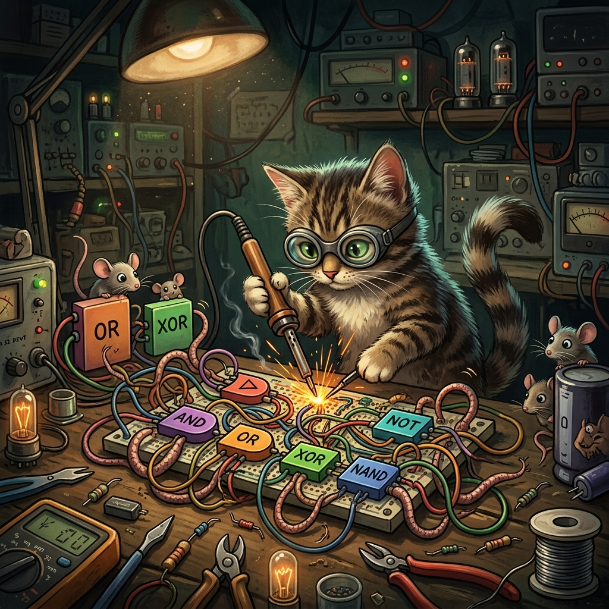
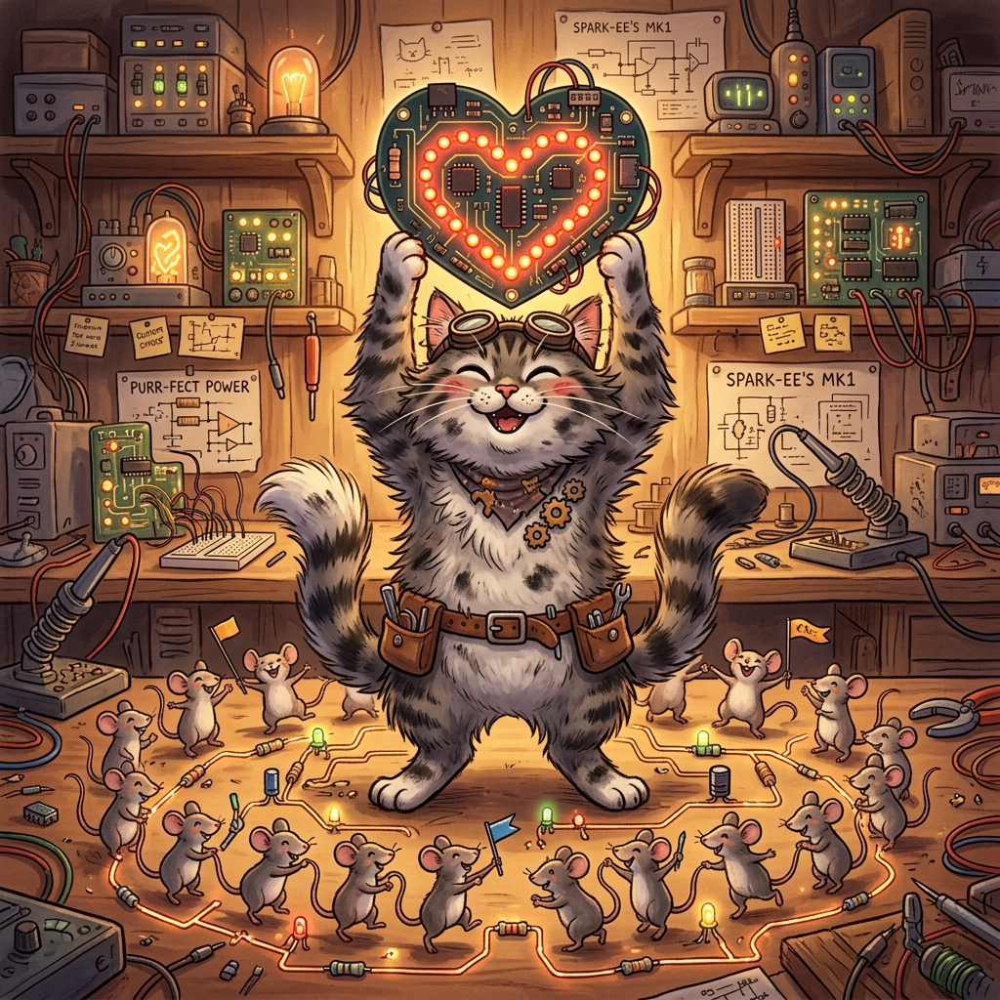

回路を組み立てて計算させろ！
スイッチA・Bを切り替えて、各ゲートの出力がどう変わるか観察しよう！
🎯 ミッション
A=1, B=1 にしたとき、ANDとORの出力がそれぞれ何になるか確認しよう！
半加算器 = 1ビットの足し算回路。
「和(S)」と「桁上げ(C)」にどのゲートを使う？
1の位は「片方だけ1」の時に1になる。AND・OR・NOTをどう組み合わせる？
未選択
繰り上がりが起きるのは「両方1」の時。どの回路？
未選択
組み立てた半加算器にスイッチで入力して、計算結果を確認しよう！
| A | B | S(和) | C(桁上げ) | 確認 |
|---|---|---|---|---|
| 0 | 0 | 0 | 0 | ⬜ |
| 0 | 1 | 1 | 0 | ⬜ |
| 1 | 0 | 1 | 0 | ⬜ |
| 1 | 1 | 0 | 1 | ⬜ |
🎯 ミッション
4つのパターン(00,01,10,11)をすべて試して真理値表を完成させろ！
回路がショートした…

半加算器を完璧に理解した！
🗝️ Google Classroomの解答に以下の「あいことば」を入力してください。
ANDゲートに猫を通したら出力が「ニャ」だった